|
”Hardware Libre: la Tarjeta Skypic, una Entrenadora para Microcontroladores PIC”. Facultad de Informática de A Coruña. Julio 2005. |
|
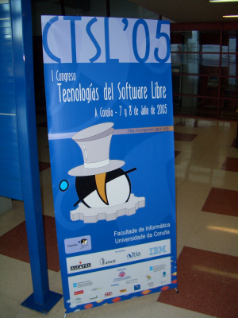 |
Título: “Hardware Libre:la Tarjeta Skypic, una entrenadora para Microcontroladores PIC”.
Actividad: Exposición del artículo con el mismo nombre. Artículo disponible aquí.
Duración: 30 minutos
Evento: I Congreso de Tecnologías de Software Libre. CTSL05
Organiza: GPUL, Grupo de Programadores y Usuarios de Linux. Universidade da Coruña
Fecha: 7 de Julio de 2005
Ponente:
Las ideas del software libre se están extendiendo a otros ámbitos. Uno de ellos es el hardware. En este artículo presentamos una tarjeta libre, para desarrollo de proyectos con microcontroladores PIC. Es hardware libre, por lo que cualquiera la puede utilizar, estudiar, fabricar, modificar, distribuir y redistribuir las modificaciones. Las aplicaciones principales son la robótica y la docencia, aunque se puede utilizar en cualquier proyecto donde se requiera un microcontrolador. Los diseños de hardware libre presentan muchas ventajas para la sociedad, siendo la mayor de ellas el aumento del conocimiento tecnológico: están ahí no sólo para ser usados, sino para que cualquiera pueda comprender su funcionamiento interno.
|
Descargas |
|
pres-skypic.sxi (2,5 MB) |
Presentación para OpenOffice 1.1.3 |
|
pres-skypic.pdf (750KB) |
Presentación en PDF |
Se conceden permisos para usar, modificar y/o distribuir esta presentación, siempre que se mantenga esta nota.
Artículo: "Hardware libre: clasificación y desarrollo de hardware reconfigurable en entornos GNU/Linux", presentado en el VI congreso de Hispalinux. Septiembre, 2003.
Herramienta de diseño electrónico Eagle (no libre)
Ifara tecnologías. Empresa que comercializa la tarjeta Skypic.
Artículo: “Herramientas hardware y software para el desarrollo de aplicaciones con Microcontroladores PIC bajo plataformas GNU/Linux”. III Jornadas de Software libre. Mayo 2004.
Cuaderno técnico 7: “Grabación de la tarjeta Skypic usando otra Skypic”
Robot Skybot, para iniciarse en el mundo de la robótica.
Comunidad de hardware libre: opencores.org
Procesador Libre LEON
Herrramienta libre para diseño electrónico: KICAD.
El congreso se celebró los días 7 y 8 de Julio (jueves y viernes) en La Coruña. Yo llegué el miércoles 6, en avión, con la idea de hacer un poco de turismo. A las 8:45 de la mañana ya estaba en el aeropuerto de La Coruña. Cogí un autobús y me fui al hotel, Maycar, situado muy cerca de la plaza de Pontevedra.
Cogí la mochila, la cámara de fotos y ... ¡a conocer la ciudad!. Lo primero que ví fue la playa de Riazor (foto de la izquierda). Empecé a andar por el paseo marítimo hasta que llegué a la Torre de Hércules (foto de la derecha).
|
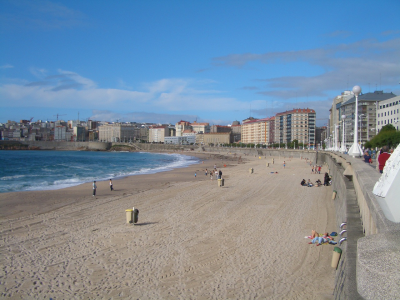 |
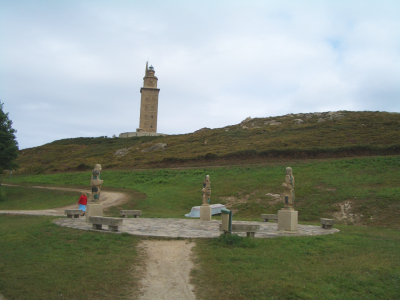 |
Las vistas desde la Torre de Hércules son espectaculares (izquierda). Después fui a visitar el Aquarium Finisterre (derecha), donde estuve unas dos horas contemplando toda la diversidad de peces que tienen. Al salir me enteré que Madrid no había ganado la candidatura para las olimpiadas de 2012. Qué le vamos a hacer, en la próxima habrá más suerte ;-)
|
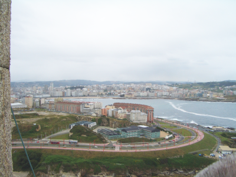 |
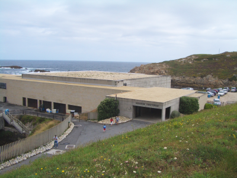 |
Ya llegaba la hora de comer, así que me fui paseando por el paseo marítimo hacia la zona centro. Llegué a la plaza de María Pita (izquierda) y siguiendo las recomendaciones de la “guía de supervivencia” que nos prepararon los organizadores del congreso, entré en el “Mesón do Pulpo” (derecha) donde me tomé un pulso a la Gallega con un Ribeiro y una tarta de Santiago de postre. ¡¡Todo un lujo de comida!!
|
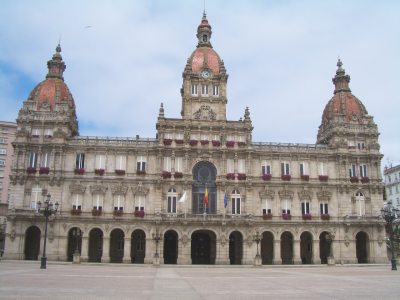 |
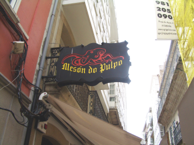 |
Por la tarde fui a visitar la casa de la ciencias. De camino pasé por delante del palacio de congresos (izquierda). En el museo de la ciencia (derecha) hay un planetario en la última planta. Aproveché también para ver una de las sesiones, que estuvo genial.
|
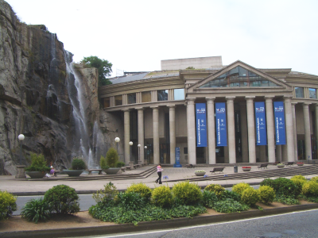 |
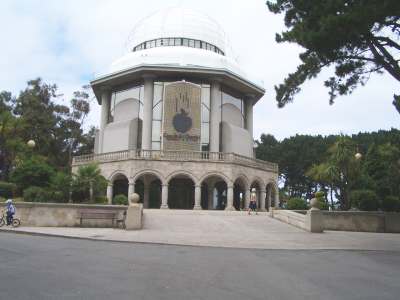 |
En una de las salas del museo de la ciencia uno se puede “clonar”. En la foto de la izquierda estoy yo con todos mis clones :-). Por último visité la casa del hombre y me fui al hotel. ¡¡Al día siguiente comenzaba el congreso!!
|
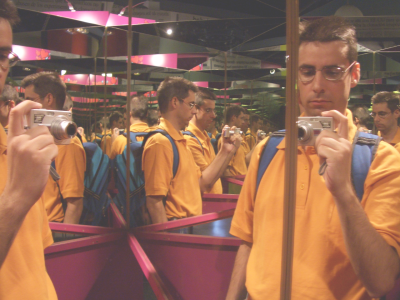 |
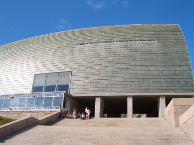 |
|
|